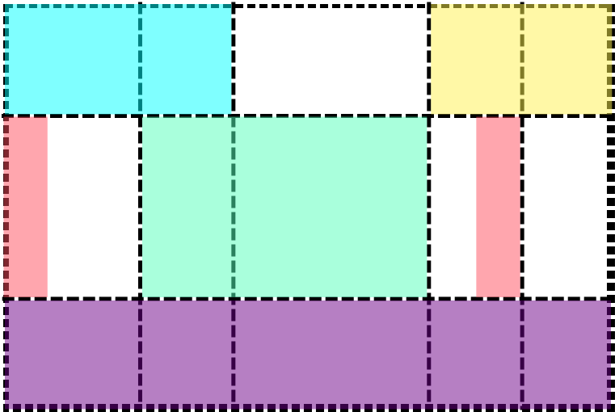

The case for modern CSS

By Chen Hui Jing / @hj_chen


What we don't understand, we fear.
What we fear, we judge as evil.
What we judge as evil, we attempt to control.
And what we cannot control…we attack.
—Anonymous
💩
💩
💩


#1: CSS Grid
Gives us an unprecedented level of control over where our elements are placed on a page
CSS grid basics
Define your grid.

Place items in the grid.
From the simple…
.container {
display: grid;
grid-template-columns: repeat(auto-fill, minmax(10em, 1fr));
}…to the elaborate


#2: CSS Custom Properties
Provides us dynamic variables in native CSS, comes with scoping, inheritance and the cascade.
Modify variable values on the fly
/* CSS that is applied to this presentation */
:root {
--accent-colour: #ff4f5e
}
h2 {
color: var(--accent-colour, #ff4f5e)
}Credit to Mike Riethmuller for inspiring this live demo
:root {
--spacer: 0.5em;
--columns: 1;
}
.card {
background-color: #fff;
max-width: calc((100% / var(--columns, 1)) - var(--spacer, 0.5em) * 2);
border: 1px solid #6f777e;
margin: var(--spacer, 0.5em);
padding: var(--spacer, 0.5em);
}
/* Modify the variable values at specific breakpoints */
@media screen and (min-width: 480px) {
:root {
--spacer: 0.75em;
--columns: 2;
}
}
@media screen and (min-width: 720px) {
:root {
--spacer: 1em;
--columns: 3;
}
}See the Pen Single Custom Property, Multiple Calcs by Dan Wilson (@danwilson) on CodePen.
Code by Dan Wilson from Making Custom Properties (CSS Variables) More Dynamic
/* Retrieves and sanitises the value of a custom property. */
const getVariable = (styles, propName) => String(styles.getPropertyValue(propName)).trim()
/* Sets the value of a custom property at the document level */
const setVariable = (propName, value) => {
document.documentElement.style.setProperty(propName, value)
}Code based off CSS Custom Properties (CSS Variables) Sample by Sérgio Gomes
#3: Feature Queries
Built-in feature detection with native CSS
Using @supports (AKA feature queries)
.selector {
/* Styles that are supported in old browsers */
}
@supports (property:value) {
.selector {
/* Styles for browsers that support the specified property */
}
}Styles for every browser
Self-updating designs
Useful resources
- CSS Grid Layout Module Level 1
- CSS Grid Layout Module Level 2
- Grid by Example by Rachel Andrew
- CSS Grid Layout Examples by Igalia
- Basic concepts of grid layout by Rachel Andrew
- Deep Dive into Grid Layout Placement by Manuel Rego Casasnovas
- Grid Auto-Placement Is Ready by Manuel Rego Casasnovas
- CSS Grid Layout and positioned items by Manuel Rego Casasnovas
- Codrops CSS reference: Grid by Chen Hui Jing
- Things I’ve Learned About CSS Grid Layout by Oliver Williams
- Learn CSS Grid by Jen Simmons
- Examine grid layouts by MDN
- Grid Level 2 and Subgrid by Rachel Andrew
- CSS Custom Properties for Cascading Variables Module Level 1
- CSS Variables: Why Should You Care? by Rob Dodson
- Codrops CSS reference: Custom Properties by Chen Hui Jing
- It's Time To Start Using CSS Custom Properties by Serg Hospodarets
- A Strategy Guide To CSS Custom Properties by Mike Riethmuller
- Developing Inspired Guides with CSS Custom Properties (variables) by Andy Clarke
- Making Custom Properties (CSS Variables) More Dynamic by Dan Wilson
- Using CSS custom properties (variables) by MDN
- CSS Conditional Rules Module Level 3: Feature queries: the ‘@supports’ rule
- Using Feature Queries in CSS by Jen Simmons
- Cascading Web Design with Feature Queries by Chen Hui Jing
- The Magic of Feature Queries, Part 1 – 5/7 Resilient CSS by Jen Simmons
- The Magic of Feature Queries, Part 2 – 6/7 Resilient CSS by Jen Simmons
- Feature Queries and Grid by Rachel Andrew
- @supports by MDN
🧡
💙
💛
Merci!


Font used is Zilla Slab, by Typotheque